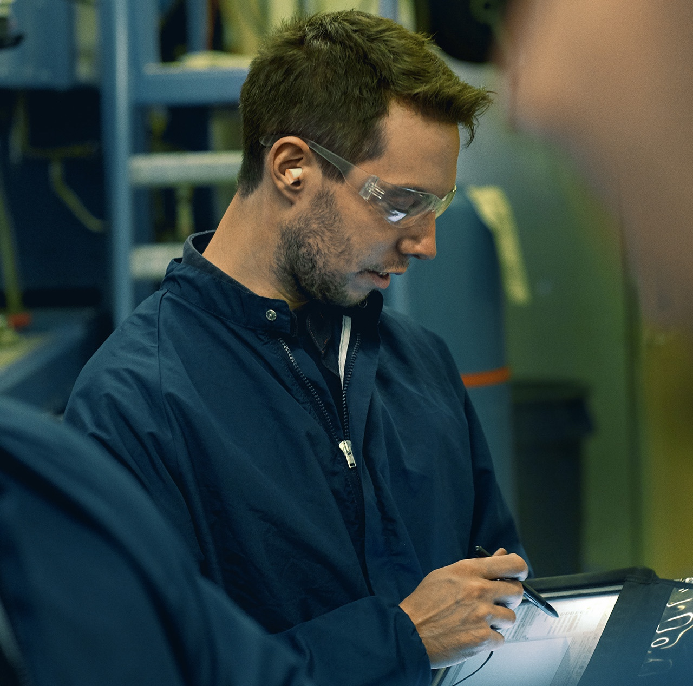
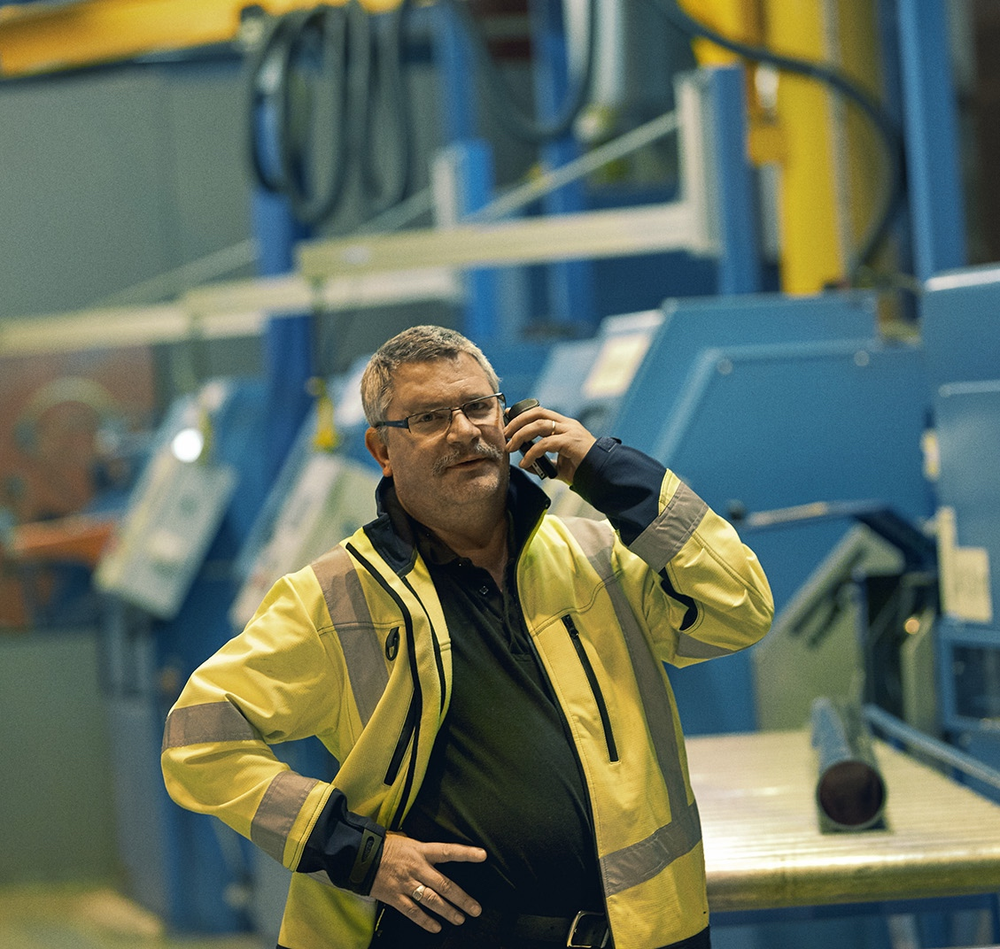
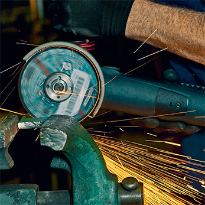
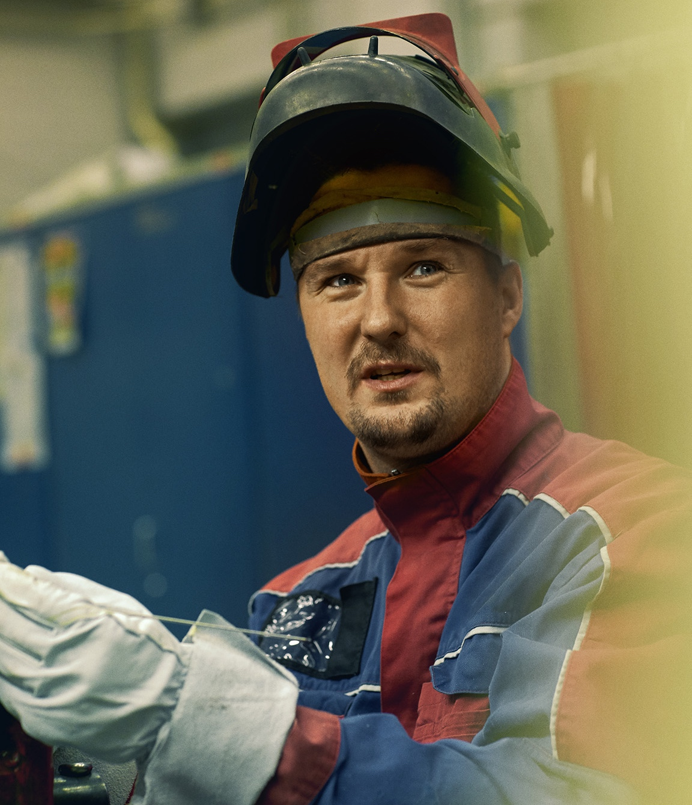
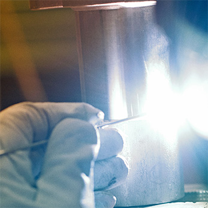
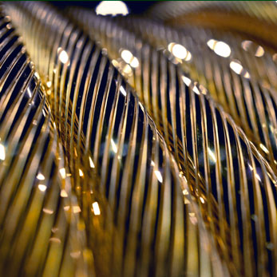
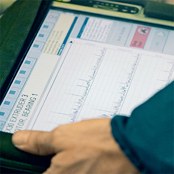

Nuestro equipo altamente especializado puede fabricar una amplia gama de distintos tipos de productos para los clientes. Nuestros servicios expertos también incluyen la ingeniería, diseño y fabricación de prototipos, grupos de montaje y pequeñas series para aplicaciones exigentes. Nos confían la gestión toda la logística, así como soporte de producto en todo el ciclo de vida del producto.
Trabajamos con un amplio abanico de sectores y aplicaciones, y ofrecemos servicios altamente especializados en los siguientes sectores, aunque sin limitarnos a ellos: aeroespacial, tracción, automatización, energía, máquinas-herramienta, tecnología médica, embalaje e impresión, montaje para construcción y tecnología de rehabilitación.
Transformación de chapa
Como auténticos socios, trabajamos en estrecha colaboración con los clientes para ofrecer soluciones sofisticadas de fabricación y transformación de chapa. Nuestros especialistas pueden reducir los tiempos de ciclo, creando componentes de alta calidad innovadores y rentables y grupos de montaje listos para la manufactura. Nuestra completa gama de herramientas y tecnologías garantiza que podemos asumir prácticamente cualquier desafío en metalurgia y aun así ofrecer la mejor combinación de funcionalidad y productividad.
Nuestras capacidades en metalurgia incluyen:
Ingeniería: 3D CAD / 2D CAD / Programación 3D / Programación 2D
Ingeniería inversa: Nuestro proceso de escaneo captura el perfil completo de piezas o plantillas existentes a velocidad láser y almacena los datos en archivos compatibles con CAD para su uso posterior.
Transformación de chapa: Corte con láser / Grabado CNC / Grabado láser / Prensas excéntricas e hidráulicas y máquinas de estampar
Conformado: Biselado CNC / Redondeo / Grabación en relieve / Embutición profunda
Unión: Remachado / Clinchado / Soldadura autógena / Soldadura de estaño / Soldadura por puntos
Postratamiento: Pulido en tambor / Cepillado / Galvanizado / Pintura
Montaje: Productos listos para instalar / Entrega justo a tiempo

Fabricación de piezas nobles
Podemos diseñarlo y fabricarlo todo, desde piezas de máquinas sencillas hasta las de más alta precisión, incluyendo piezas hechas con materiales difíciles de mecanizar. Nuestros especialistas pueden ofrecer orientación desde el prototipo inicial y las pruebas funcionales, pasando por la fabricación. Nuestra amplia gama de opciones de fabricación (centros de fresado, tornos, rectificadoras cilíndricas y de superficie plana, electroerosión por hilo o vertical y distintas máquinas de puntear) nos permite ofrecer la técnica de fabricación óptima para cada aplicación.
Nuestras capacidades de fabricación de piezas nobles incluyen:
Ingeniería: 3D CAD / 2D CAD / Programación 3D / Programación 2D
Nuestros equipos de desarrollo y diseño crean soluciones adecuadas a los clientes para rediseñar u optimizar productos, módulos, plantillas y dispositivos o herramientas.
Componentes mecanizados: Varias máquinas herramientas de tecnología punta abarcan un amplio abanico de tecnologías de fabricación, tales como fresado, taladrado, torneado, rectificado y electroerosión por hilo; trabajando dimensiones de mecanizado de hasta 2000 x 1200 x 1500 mm.
Plantillas, dispositivos y herramientas: Entre nuestros puntos fuertes se encuentran tanto el diseño como la fabricación de plantillas y dispositivos, medidores y equipos de prueba, y contamos con la capacidad de ofrecer equipos de sujeción de alta precisión, dispositivos de montaje y soportes de piezas de trabajo.
Fabricación de montaje: Mediante la gestión de la logística y aprovisionamiento en la construcción y montaje de sistemas listos para operar y módulos listos para instalar, reducimos el número de interfaces, lo que conduce a una alta satisfacción del cliente.
Materiales: Estamos especializados para una amplia gama de materiales como aleaciones de aluminio y de cobre, aleaciones basadas en titanio y níquel tales como Hastelloy X, Inconel, Nimonic y Haynes.

Servicios de afilado
Entendemos que la eficacia y la vida útil general de una herramienta a menudo se pueden mejorar mediante la optimización de la geometría del filo de corte. Nuestros especialistas pueden ayudar a elegir las materias primas adecuadas para afilar o recubrir la superficie de corte de una herramienta, y nuestra experiencia puntera puede ayudar a descubrir las eficiencias no explotadas mediante la adopción de un innovador régimen de afilado.
Nuestras capacidades en afilado incluyen:
Afilado convencional: Gama de servicios completa
Afilado CNC: Estándar / Cilíndrico / Cónico / Herramientas personalizadas

Tratamiento térmico
Nuestros servicios de tratamiento térmico incluyen procesos tradicionales como recocido, temple, soldadura fuerte y revenido en atmósfera normal, en condiciones de gas inerte o en vacío. Además, ofrecemos procesos especiales como nitruración / nitrocarburación (un proceso de temple superficial respetuoso con el medio ambiente, así como el pretratamiento y postratamiento necesarios). Nuestra experiencia e infraestructura nos permiten ofrecer un servicio único de temple y revenido de aleación de aluminio, así como el tratamiento de acero y cobre.
Nuestras capacidades de tratamiento incluyen:
Sistemas de vacío: Nuestros hornos de alto vacío son adecuados para recocido, temple y soldadura fuerte. El tamaño máximo por lote es de 1200 x 900 x 1500 mm, con capacidad de endurecimiento por temple por cuatro lados de hasta cinco bares.
Soldadura fuerte: Una sala especialmente equipada está disponible para preparar las piezas. También contamos con equipos de soldadura por puntos y un dispensador de soldadura automática, y somos especialistas en soldadura fuerte con soldadura a base de níquel.
Revenido: Nuestro sistema de revenido con componente de aluminio ofrece dimensiones de 800 mm de longitud y un diámetro de 1200 mm, con un tanque de agua caliente para temple.
Endurecimiento, recocido: Un tanque de aceite caliente, nitrógeno o argón disponible para temple, carbonización, endurecimiento, recocido, tratamiento térmico de solubilización y temple por precipitación.
Postratamiento: Utilizamos sistemas a presión para acabar piezas, empleando tanto arena como perlas de vidrio. También disponemos de pretratamientos y postratamientos mecánicos.
Nitruración nitrocarburación gaseosa: Estos tratamientos superficiales hacen que los equipos mecánicos sean extraordinariamente resistentes al desgaste, especialmente los componentes de engranajes, ruedas dentadas, máquinas herramientas y piezas de molde, para lotes de tamaño hasta 1500 x 1000 mm. Un sensor de nitruración monitoriza y controla el proceso para asegurar que se alcanza la calidad especificada, incluyendo: alta dureza superficial; mínimo desgaste; mejor resistencia a la corrosión; mejores características de deslizamiento; mínimo cambio dimensional o distorsión.

Servicios de fabricación y alquiler de herramientas
Nuevas herramientas: Podemos fabricar nuevas herramientas para requisitos específicos. Fabricamos fresas, brocas, pasadores de centrado CNC y muchos otros tipos de herramientas. Nuestros especialistas también están disponibles para ayudar a desarrollar o mejorar las especificaciones, con el fin de garantizar el uso más eficiente de los materiales y la más alta calidad.
Alquiler de instrumentos de medición, herramientas estándar y personalizadas: En muchas situaciones es más rentable alquilar equipos en función de las necesidades en vez de comprar y realizar el mantenimiento de equipos que rara vez se van a necesitar, especialmente herramientas de gran tamaño. Nuestro servicio de alquiler ofrece una amplia variedad de opciones en atractivos términos y condiciones.

Ejemplos de productos
Componentes para turbinas de gas y vapor:
- Cámaras de combustión de turbina de gas, componentes de paso de gas caliente, bandejas de conducción de aire
- Mecanizado de palas y álabes, piezas de montaje de álabes (por ejemplo, pasadores y cuñas), difusores, segmentos de estátor y escudos de calor, vapor de agua y filtros de quemadores
- Reajuste de álabes de turbina de gas y escudos de calor (retirada y soldadura de nuevo de sellado nido de abeja, incluyendo la certificación de calidad)
- Piezas para generadores hidroeléctricos y turbogeneradores:
- Terminales y barras conductoras completamente formados, mecanizados y soldados en vacío
- Producción de segmentos de núcleo de estátor eléctrico, incluyendo la ingeniería y la producción de las herramientas de perforación relacionadas
- Apoyo externo y sistemas auxiliares:
- Bombas de engranajes, válvulas, actuadores y transmisores de presión para suministro de vapor y aceite lubricante
- Dispositivos de engranaje de giro de rotor y otras piezas de engranaje
- Equipos para fábrica y emplazamiento de construcción
- Ingeniería, fabricación y puesta en marcha de máquinas especiales
- Medición personalizada e inspección – utillajes
- Equipos de montaje, equipos de transporte y elevación para componentes de turbina y generador
- Armarios para herramientas totalmente equipados con herramientas especiales según las especificaciones del cliente
- Máquinas especiales para operaciones de fresado y taladrado en el rotor
- Máquinas especiales para barra conductora de procesamiento (incisión perforante / corte, doblado y medición)
- Equipos de prueba para ensayos de presión y mediciones de flujo componentes de turbina
- Ingeniería y fabricación de rectificado, fresado, electroerosión y dispositivos de montaje para la fabricación de álabes de la turbina

Certificación
Contamos con varios certificados relacionados con los servicios de fabricación, incluyendo:
ISO 9001 Sistema de gestión de calidad
ISO 14001 Sistema de gestión ambiental
OHSAS 18001 Sistema de gestión de la seguridad y la salud en el trabajo
ISO 3834-2 Requisitos de calidad para el soldeo por fusión de materiales metálicos
EN 15085-2 Soldeo de vehículos ferroviarios y componentes
EN 9100 Requisitos para las organizaciones de aviación, espaciales y de defensa
